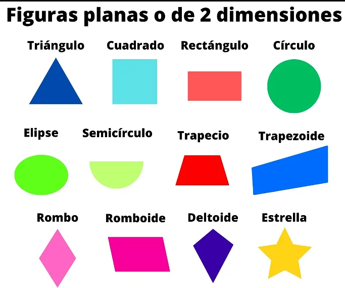
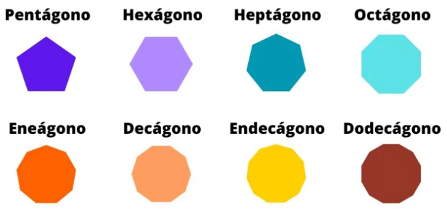
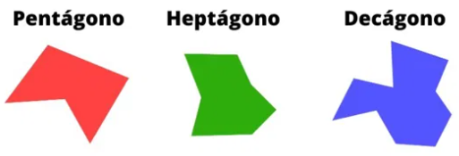
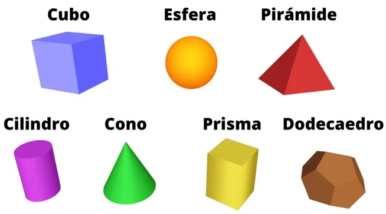

Las figuras geométricas de 0 y 1 dimensión son las más sencillas, y ambas comprenden un total de tres tipos distintos. El punto es la única figura geométrica que no contiene dimensiones.
En cuanto a las de 1 dimensión, solo la línea y la curva se consideran como tales.
Figuras planas de dos dimensiones

Las figuras de 2 dimensiones contienen por lo menos tres lados, y son formas cerradas. A diferencia de las de 0 y 1 dimensión, estas sí que tienen un área delimitada.
Este tipo de formas se denominan también figuras planas o polígonos.
Poligonos regulares

Pentágono: es un polígono de 5 lados.
Hexágono: es un polígono de 6 lados.
Heptágono: es un polígono de 7 lados.
Octágono: es un polígono de 8 lados.
Eneágono: es un polígono de 9 lados.
Decágono: es un polígono de 10 lados.
Endecágono: es un polígono de 11 lados./li>
Dodecágono: es un polígono de 12 lados.
Poligonos irregulares

Figuras geometricas de 3 dimensiones

Los cuerpos geométricos se caracterizan por describir formas extendidas a lo largo de las tres dimensiones. Es decir, son figuras delimitadas que poseen altura, anchura y profundidad. Además de los ángulos y lados, conocidos como aristas, podemos describir estas figuras según la forma de la base y el número de caras y vértices.
Algunos de los cuerpos geométricos son:
Cubo: es una figura de 6 caras en el que todas las aristas y ángulos son iguales.
Esfera: es una forma que, en teoría, contiene un número infinito de vértices y caras equidistantes con respecto al centro.
Pirámide: es una figura de base poligonal en el que los vértices del polígono conectan a un mismo punto, formando caras laterales en forma de triángulos. La base puede tener un número variado de aristas, como un cuadrado, pentágono o decágono. Si la base es triangular, la figura se conoce también como tetraedro.
Cilindro: es cuerpo de base circular que, en teoría, posee un número infinito de caras laterales.
Cono: es una figura de base circular en el que todos los vértices de la base conectan a un mismo punto, formando un número infinito de caras laterales en forma de triángulos.
Prisma: es un cuerpo geométrico de base y caras poligonales. La base puede ser un triángulo, cuadrado, pentágono o tener un mayor número de aristas.
Dodecaedro: es una esfera más simple que contiene 12 caras.